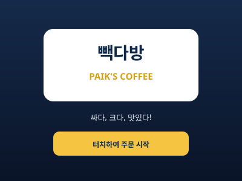

로그인 없이 시작어디서 시작할까요?
필요한 활동으로 바로 이동하세요.
활동을 고르는 기준도 함께 보세요.
도구 이름만 나열하지 않고, 어떤 일상을 연습하는지부터 설명합니다.
- 생활 장면
- 주문하고, 계산하고, 움직이는 실제 순서
- 사용 방법
- 카메라와 오디오처럼 시작 전에 알아야 할 조건
- 다음 행동
- 저장하고 다시 찾아볼 수 있는 개인 공간
자료는 필요한 만큼만.
작업치료 영상과 학회·기관 링크를 별도 흐름으로 찾아볼 수 있습니다.
조금씩 더 좋아지는 OT Hub
새로운 기능과 개선 내용은 공개 기록으로 남깁니다.